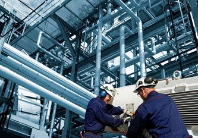

<section class="about">
  <div class="container">
    <h2 class="about__title">О нас</h2>
    <div class="about__wrapper">
      <div class="about__img">
        <picture>
          <source width="205" height="225" type="image/webp" media="(min-width: 768px)" srcset="../img/about/about-tablet@1x.webp 1x, ../img/about/about-tablet@2x.webp 2x">
          <source width="137" height="118" type="image/webp" srcset="../img/about/about-mobile@1x.webp 1x, ../img/about/about-mobile@2x.webp 2x">
          <source width="205" height="225" type="image/jpg" media="(min-width: 768px)" srcset="../img/about/about-tablet@1x.jpg 1x, ../img/about/about-tablet@2x.jpg 2x">
          
        </picture>
      </div>
      <div class="about__content">
        <div class="about__intro">
          <p>Здравствуйте, уважаемые клиенты компании НЕО-ЛИД! <br>Меня зовут Владимир Дроздов. Вот уже более 20&nbsp;лет мы&nbsp;являемся поставщиками станков и&nbsp;промышленного оборудования для заводов и&nbsp;фабрик. Работаем как с&nbsp;клиентами в&nbsp;Челябинской области, так и&nbsp;по&nbsp;всей России. Наша компания занимаемся оснащением производств по&nbsp;изготовлению мебели, окон, обработке дерева и&nbsp;металла.</p>
        </div>
        <div class="about__block about__block--products">
          <p>Также осуществляем снабжение предприятий малого и&nbsp;среднего&nbsp;бизнеса:</p>
          <ul>
            <li>инструментом;</li>
            <li>клеевыми материалами;</li>
            <li>запасными и расходными частями;</li>
            <li>сопутствующими материалами для производства мебели.</li>
          </ul>
        </div>
        <div class="about__block about__block--service">
          <p>Благодаря многолетнему опыту работы по&nbsp;оснащению производств мы&nbsp;предлагаем:</p>
          <ul>
            <li>квалифицированную консультацию на&nbsp;этапе подбора станков и&nbsp;материалов;</li>
            <li>лучшие цены и&nbsp;кратчайшие сроки поставки станков;</li>
            <li>решение задач по&nbsp;вводу в&nbsp;эксплуатацию оборудования любой сложности;</li>
            <li>оперативное решение возникающих технических вопросов;</li>
            <li>реальное гарантийное и&nbsp;послегарантийное&nbsp;обслуживание.</li>
          </ul>
        </div>
        <a class="about__modal-button button" href="#" data-modal-button="callback-form">Написать нам</a>
      </div>
    </div>
  </div>
</section>
